1
Power Coding RulesIntroduction
This chapter presents reference information for the Power policy. This policy contains general-purpose rules that cover many aspects of low-power checks, and a list of new prepackaged netlist checks in this domain.
The Power Policy is currently in Limited Customer Availability (LCA) status. To use this policy, you need a separate Leda-power license feature. For more information, contact your sales representative.
Overview of Low/Multi Power Designs
Designs may contain one or more blocks that operate at different voltage levels. More complex designs may even allow some of these blocks to be switched off from time to time to reduce power consumption. Synopsys implementation tools, including Leda, use the notion of power domain to describe both these types of design. A power domain is a logical grouping of one or more hierarchical blocks in a design that share the same:
- Primary voltage states or voltage range.
- Power down control and acknowledge signals, if any.
- Other characteristics that implementation tools use, but which Leda ignores.
Figure 1 shows a multi-voltage design with two different power domains, one containing TOP and TOP.A and operating at 1.2V and the other containing TOP.B and operating at 1.4V. Signals going from one domain to the other require level-shifter cells to enable them to work at the different voltage levels. These are shown as buffers TOP.LS1 and TOP.LS2 in the figure.
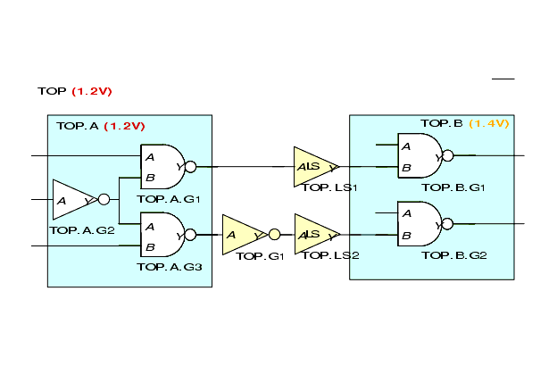
All cells instantiated in a multi-voltage design must work at the voltage level of the power domain in which they have been instantiated. This usually means different technology libraries for each voltage level. It also means that these technology libraries must include the appropriate level-shifter cells. The common practice is to group all these libraries into a common target library called a multi-NLDM library where NLDM stands for Non-Linear Data Model. Library selection is done by setting power contexts.
When dealing with multi-voltage designs, you also need to instantiate isolation cells to protect the power domains from each other. These must also appear in the technology libraries.
In most cases, information about power domains, cannot be extracted automatically from a design, and so you need to provide it. You can do this by:
- Using commands such as create_power_domain in the Tcl-shell.
- Using the Verilog $power system task call or the VHDL power procedure call in RTL code.
- Scanning source power net trees in the PG-netlist (PG stands for Power-Ground)
Leda accepts all these methods and also allows you to combine them. In addition, the commands that Leda uses for defining power domains are identical to the commands used by other Synopsys tools.
The following sections contain details on using each of these methods to define power domains for Leda and the rules available to check them.
Power Domains
This section describes the different ways to infer power domains in Leda. These are:
- Using commands such as create_power_domain in the Tcl-shell.
- Using the $power and $isolate system calls in RTL code.
- Scanning source power net trees in the PG-netlist (PG stands for Power-Ground)
Specifying Power Domains with Tcl Commands
The command to create power domains in Tcl is create_power_domain. You also need to specify a voltage specification for the power domain and then connect the power domain to the voltage specification. To do this, use the commands create_power_net_info and connect_power_domain.
Use the following commands to specify the power domains shown in Figure 1:
leda> create_power_net_info VDD12 -power -nominal_voltages {1.2} leda> create_power_net_info VDD14 -power -nominal_voltages {1.4} #If no cells are specified, then power domain is associated with TOP leda> create_power_domain POW12 leda> create_power_domain POW14 -object_list [get_cells IB] leda> connect_power_domain POW12 -primary_power_net VDD12 leda> connect_power_domain POW14 -primary_power_net VDD14For complete syntax of these commands, refer section "Power Tcl commands" .
When you create a power domain, Leda can automatically infer level shifters and isolation cells from DB libraries, if the corresponding cells have the following attributes:
Level shifter: is_level_shifter
Isolation cell: is_isolation_cell
Leda can also infer the cells if you have specified them explicitly in the Tcl shell using the following commands:
leda> set_level_shifter <cell_name_list> leda> set_isolation_cell [<cell_name_list>] [-instances [instance_name_list] ]Once this inference is complete, Leda provides many checks for coherence of the power domains. For example:
- LSINSALL - Checks that a level shifter has been inserted on every connectivity path between logic or wires of two distinct voltage domains (with two different voltage levels).
- LSNONEED - Check that level shifters have not been inserted between voltage regions/blocks of the same voltage level.
- LSPINVOLT - Checks that level shifter pins are connected to the correct voltage domains, i.e. the voltage levels of the two voltage domains separated by a given level shifter match the voltage values specified for the two (in and out) pins of the given level shifter
- ICINSALL - Checks that isolation cells are inserted on any connectivity path of any port of a power domain.
- ICNONEED - Checks that isolation cells are inserted on a path that does neither reaches any power domain input port nor originates from any output port of a power domain
- ICNOBUF - Checks that no buffers are present between the output ports of a power domain and the isolation cells
Inferring Power Domains from RTL
Leda can infer power domains from RTL and combine them with those specified in Tcl mode. In Verilog, you can use the $power system task for this inference and in VHDL, you can use the power procedure call for power inference.
You need to decide whether the RTL-specified power domains are to be used or not. This is done through the infer_power_domains command in Tcl mode. You must execute this command after the elaboration command, like for any other Tcl power command:
leda> elaborate -top TOP leda> infer_power_domains
When instructed to do, Leda infers each of the following power domains:
initial $power (<domain_name>, <power_on_net>, <on_sense_expression>, <power_on_ack_net>, <ack_sense_expression>, <instance1>, <instance1> , ... , <instanceN> )
This is exactly as if you had specified the following Tcl power command:
create_power_domain <domain_name> [-power_down] [-power_down_ack <net or pin>] [-power_down_ctrl <net or pin>] [-power_down_ack_sense <0 or 1>] [-power_down_ctrl_sense <0 or 1>] [-object_list <cell set>]
The Leda checker handles power domains inferred from RTL in exactly the same way as their equivalent Tcl-specified power domains, with the following restrictions:
- Power domains inferred from RTL cannot be removed by the command remove_power_domain. Leda issues an error message if remove_power_domain is called in the same Tcl session after command infer_power_domains.
- Command report_power_domain is available on the power domains inferred from RTL.
In Verilog, a power domain is defined through the $power system task called from an initial statement like:
initial $power (<domain_name>, <power_on_net>, <on_sense_expression>, <power_on_ack_net>, <ack_sense_expression>, <instance1>, <instance1> , ... , <instanceN> )
Arguments
domain_name Power domain name written as a string (within double quotes).
power_on_net The control signal for power on. It is limited to simple signals to avoid creation of implicit power domains. Simple signal means only wiring is required. If the width is wider than one bit, the lowest bit is taken. Bus representation for staggered power-on is not supported in this version.
on_sense_expression A constant number indicating the power-available sense of the power-on expression. The sense expression should have the same width as the power-on expression in a bit-to-bit correspondence to the power-on expression, and should only consist of 1s and 0s (no x's). Presently, only single bit numbers are supported. If the number has more than one bit, only the lowest bit is used.
power_on_ack_net The power up acknowledge expression is used to acknowledge to the outside environment (the power controller) that the power domain is fully up and running. It is limited to simple signals because $power drives this net. If the width is wider than one bit, the lowest bit is used. Bus representation for staggered power-on is not supported in this version.
ack_sense_expression A constant number indicating the power-available sense of the power-ack expression. The sense expression must have the same width as the power-ack expression in a bit-to-bit correspondence to the power-ack expression, and should only consist of 1s and 0s (no x's). Presently, only single bits are supported. If the number has more than one bit, only the lowest bit is used.
instance_n A list of modules belonging to the power domain. Named blocks are not allowed. All the logic contained in the instances is assumed to be part of the defined power domain. In this version, hierarchical module instance reference is not allowed. Quoted names are allowed to create wildcard, and they take the form of "a*, u*", etc. Exclusion is temporarily not supported.
For example:
initial $power("pd1", pd_sig, 1`b0, p_ack, 1`b1, a, "b*")Use of wild cards (*) in instance names is temporarily not supported by Leda.
In VHDL, a power domain is defined through the power procedure system task called from an initial statement like:
procedure power (<domain_name>, <on_sig>, <on_sense>, <ack_sig>, <ack_sense>, <instance1>, <instance1> , ... , <instanceN> )
Arguments
domain_name Power domain name written as a string (within double quotes).
on_sig The on_sig must be one of the following data types namely bit, bit_vector, std_logic, std_logic_vector.
on_sense The on_sense is a constant expression. If it is a 1-bit constant, then it must be either 0 or 1. The data type must match with that of the data type of on_sig.
ack_sig The ack_sig must be an output signal and the data type must match with that of the data type of on_sig. It can take the value of any constant expressions or a single bit value 0 or 1.
ack_sense The ack_sense is a constant expression. If it is a 1-bit constant, then it must be either 0 or 1. The data type must match with that of the data type of on_sig.
instance_n A list of modules belonging to the power domain. In this version, hierarchical module instance reference is not allowed. Wildcard expressions are also not supported.
For example:
power("domain_name", power_on, "1", power_ack, "1", "IP1");
Inferring Power Domains from PG-Netlist
The final method of inferring power domains is through PG-Netlist (PG stands for Power-Ground). A PG-Netlist is a gate-level description with explicit representation of power supply pins and nets, and instantiations of library cells using the new PG-Pin Liberty format. The following example is a simplified version of Figure 1.
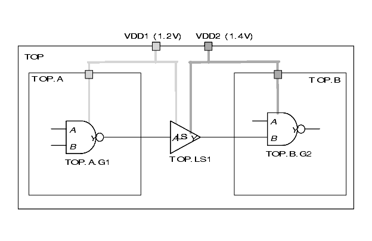
Here, the design contains explicit connection of power supplies. Note that voltage indication near the module names (TOP.A, TOP.B) have been removed and have been attached to the top-level port names (VDD1 and VDD2). This is to illustrate the fact that a PG-Netlist implicitly includes the information on power domains through the actual power connections to all the cells of the design. Therefore there should be no need for you to specify power domains with the command create_power_domain. With PG-Netlist, you need to specify power nets using the create_power_net_info command and its source_port attribute:
create_power_net_info VDD1 -power -nominal_voltages {1.2} -source_port TOP.VDD1 create_power_net_info VDD2 -power -nominal_voltages {1.4} -source_port TOP.VDD2But Leda does not automatically infer power domains from a PG-Netlist description. You must execute following commands to perform the inference:
infer_power_domains -power_nets {VDD1 VDD2}More precisely, Leda infers the power domains and their corresponding boundaries that are defined as follows:
- The power domain Leda infers for a given power net. For example, VDD1 in Figure 2 is the set of gates/cells that are connected only to those power nets/ports of the PG-Netlist that are driven by the primary power port corresponding to the given power net - e.g. TOP.VDD1 above (the "only" implies in particular that the cells that are connected to multiple power supplies are not included in such power domains).
- The boundary of an inferred power domain is the list of pins of the corresponding gates/cells that are either connected directly to primary ports or that are connected to at least one gate/cell that is not part of the inferred power domain.
The power domain is not considered always on if the supplied power net is switchable. Moreover, in Leda, you can specify the type of power switch cells with the following command:
set_power_switch <cell_name_list>Leda bypasses instances of specified power switch cells to follow the inference. It gets the internal power net to reach connected cells to infer sub power domains that are not always on by the presence of these switch boxes.
Leda does not recognize currently the enable and the acknowledge signal of inferred domains when bypassing a single or daisy-chained power switch cells.
The following example illustrates this power domain inference.
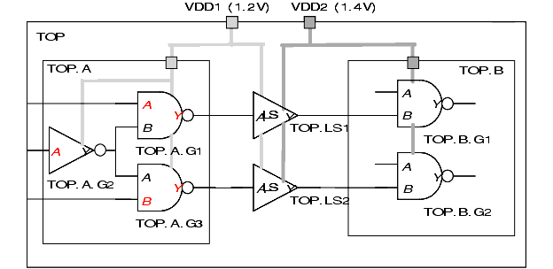
In Figure 3, the power domain inferred for VDD1 includes the gates TOP.A.G1, TOP.A.G2 and TOP.A.G3, and the boundary of this power domain includes the pins TOP.A.G1.A, TOP.A.G2.A, TOP.A.G3.B, TOP.A.G1.Y and TOP.A.G3.Y (in red). In this example, this power domain boundary matches the hierarchical boundary of TOP.A, but although this is probably desired for the implementation tool flow, it is not the general case, which is illustrated by the following example.
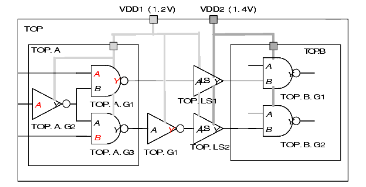
The power domain inferred for VDD1 in Figure 4 includes the gates TOP.A.G1, TOP.A.G2, TOP.A.G3 and TOP.G1, and the boundary of this power domain includes the pins TOP.A.G1.A, TOP.A.G2.A, TOP.A.G3.B, TOP.A.G1.Y and TOP.G1.Y (in red). Therefore this boundary does not match any hierarchical boundary.
Mixing Specifications and Inference
As we have seen, power domain information can come from different sources and this needs to be resolved. This section describes how this resolution is carried out.
Mixing Specifications of Power Domains From Tcl and From RTL
In the same Tcl session, you can mix power domains created by the create_power_domain command and power domains created by the $power statements in the RTL using the infer_power_domains command. So both the following sequences are equivalent if there is no conflict in specification:
leda> create_power_domain ... leda> infer_power_domains or leda> infer_power_domains leda> create_power_domain ...But, from mixed specifications, two kinds of conflict can occur:
- Same power domain name used
- Same power region referenced
For the first case, Leda issues an error message when trying to create a power domain with the same name as an existing power domain.
For the second case, Leda moves the power region to the latest power domain referencing the region and if the source power domain has no more objects, Leda removes it. Leda issues information messages for each of these steps.
Here are the dependencies and ordering of steps:
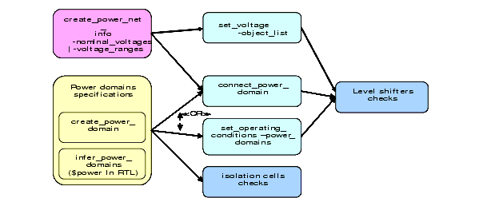
Figure 5: Dependencies and Ordering of Power Commands
Mixing Specifications of Power Domains and Inference of Power Domains from Power Nets on a PG-Netlist
In the same Tcl session, you can mix "logical" power domains (created using Tcl specification or $power statement) and "physical" power domains (inferred from power net connections).
Let us take the same example of PG-Netlist (see:
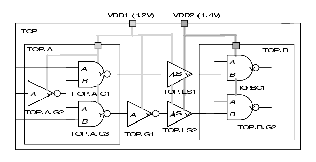
Figure 6):Level shifters are correctly instantiated/connected in this example. If you check it using the following sequence (sequence A) of Tcl commands, power domains are automatically inferred from the power ports VDD1 and VDD2.
leda> infer_power_domains -power_nets {VDD1 VDD2} leda> checkBut let's assume you check the same PG-Netlist using the power domains specified through the following sequence (sequence B) of Tcl commands:
leda> create_power_net_info VDD1 -power -nominal_voltages {1.2} - source_port TOP.VDD1 leda> create_power_net_info VDD2 -power -nominal_voltages {1.4} - source_port TOP.VDD2 leda> create_power_domain POW_TOP leda> connect_power_domain POW_TOP -primary_power_net VDD2 #Note: VDD2 instead of VDD1 is the "dummy" info leda> create_power_domain POWA -object_list [get_cells A] leda> connect_power_domain POWA -primary_power_net VDD1 leda> create_power_domain POWB -object_list [get_cells B] leda> connect_power_domain POWB -primary_power_net VDD2 leda> checkIn this case, power net connections in the PG-Netlist are ignored (because no infer_power_domains is executed), and the checker reports a "missing level shifter" between TOP.A.G3 (part of POWA, "connected" to VDD1) and TOP.G1 (part of POW_TOP, "connected" to VDD2), as well as an "unnecessary level shifter" TOP.LS2 between TOP.G1 and TOP.B.G2 (both gates respectively part of POW_TOP and POWB, both power domains "connected" to VDD2).
The reason for these differences between both sequences (one with create_power_domain commands, one with infer_power_domains commands) is caused by the difference between the specification of the power domains (using create_power_domain commands, typically written at RTL stage) and the actual implementation of the power domains (inferred by infer_power_domains commands from the PG-Netlist).
To help detect such differences between specification and implementation of power domains, the tool allows you to combine both the specification and inference of power domains into one sequence, as follows:
leda> create_power_net_info VDD1 -power -nominal_voltages {1.2} - source_port TOP.VDD1 leda> create_power_net_info VDD2 -power -nominal_voltages {1.4} - source_port TOP.VDD2 leda> create_power_domain POW_TOP leda> connect_power_domain POW_TOP -primary_power_net VDD2 leda> create_power_domain POWA -object_list [get_cells A] leda> connect_power_domain POWA -primary_power_net VDD1 leda> create_power_domain POWB -object_list [get_cells B] leda> connect_power_domain POWB -primary_power_net VDD2 leda> check leda> infer_power_domains -power_nets {VDD1 VDD2} leda> checkIn this sequence, the first check only the power domains specified with the create_power_domain commands (so the results are the same as sequence "B" ), whereas the second check uses the inferred power domains which have higher priority for the checks (so the results are the same as sequence "A" ).
In addition, the execution of the command infer_power_domains in this sequence reports each instantiated standard cell that is effectively connected (in the PG-Netlist) to a primary power net (VDD1 or VDD2). This is different from the primary power net associated with the power domain specified with create_power_domain and including the instantiated cell.
In this example, the first infer_power_domains command (for PD1) reports the following consistency error:
Inferring power domain PD1 from power net VDD1 ... Error: Cell 'TOP.G1' is connected to primary power net 'VDD1' while located in power region of power domain 'POW_TOP' connected to primary power net 'VDD2'. (POW-014) Inference of power domain PD1 completed.Here are the dependencies:
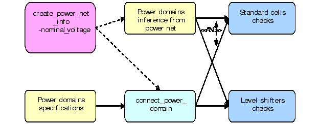
Figure 7: Dependency of Commands
Power Cells
As mentioned previously, cells such as level shifters and isolation cells can be automatically identified from DB library information or explicitly specified with shell commands. For isolation cells, Leda can also automatically recognize standard cells used as isolation cells based on structure analysis. In this section we describe how this is done.
Specifying Level Shifters
You can specify level shifters in two different ways: as DB cells or with the set_level_shifter Tcl command.
DB cell
DB cells used as level shifters must have the predefined Boolean attribute is_level_shifter set to true.
The specific type of the level shifter-buffer-type or enabled-type- is deduced as follows: if one pin of the cell has the boolean attribute level_shifter_enable_pin set to true, then it is an enabled level shifter (and in this case the cell is also an isolation cell) and the corresponding pin is the enable pin. Otherwise it is a buffer-type level shifter and it cannot be used as an isolation cell.
Tcl Command set_level_shifter
leda> set_level_shifter {<list of cell names>}Here, the cell names are Verilog module/primitive names or VHDL entity names.
Subsequent calls to the set_level_shifter command add more cells to the list of level shifter cells. You can remove a cell from the list of level shifters using the remove_level_shifter Tcl command.
leda> remove_level_shifter {<list of cell names>}Note that only the level shifters defined with set_level_shifter can be removed; not the DB cells.
You can specify the specific type of the level shifter, buffer-type or enabled-type as follows. You can specify the enable pin of the cell (if any) using the set_enable_pin routine described in section "Specifying Enable Pin Names" . If you do this, the corresponding cell is an enabled level shifter and can be used as an isolation cell.
Reporting Level Shifters
You can list all defined level shifters with the report_level_shifters command as follows:
leda> report_level_shifters ===== Level shifters ===== by cell type: * with set_level_shifter: buffer type: <cell_type_1> <cell_type_2> ... <cell_type_N> enable type: <cell_type_1> <cell_type_2> ... <cell_type_N> * from DB libraries: buffer type: <cell_type_1> <cell_type_2> ... <cell_type_N> enable type: <cell_type_1> <cell_type_2> ... <cell_type_N> by instance: * with set_level_shifter: <cell_instance_1> <cell_instance_2> ... <cell_instance_N> * from DB libraries: <cell_instance_1> : <library> <cell_instance_2> : <library> ... <cell_instance_N> : <library>Specifying Isolation Cells
You can specify isolation cells in four different ways:
- As DB cells
- By using the set_isolation_cell Tcl command in Leda's Tcl shell
- By using the $isolate system task in the Verilog code
- By using Leda's automatic inference of isolation cells from any standard cell.
DB cell
DB cells used as isolation cells must have the predefined Boolean attribute is_isolation_cell set to true.
Some level shifter cells can also be used as isolation cells.
Tcl command - set_isolation_cell
leda> set_isolation_cell {<list of cell names>} | -instances {<instance_list>}With the set_isolation_cell Tcl command, you can specify either a list of cell names (Verilog module/primitive names or VHDL entity names) or a list of cell instances. Cell instances are hierarchical instance names used to differentiate between instances of a cell that are used for different purposes. For example, they are used to differentiate several instances of a given NAND cell that are used as isolation cells from other instances of the same NAND cell that are used as logic gates.
Subsequent calls to the set_isolation_cell command add more cells to the list of isolation cells. You can remove a cell from the list of isolation cells using the remove_isolation_cell Tcl command.
leda> remove_isolation_cell {<list of cell names>} | -instances {<instance_list>}Only isolation cells defined with set_isolation_cell can be removed and not the DB cells.
Verilog $isolate system task
To describe isolation cells with $isolate, the Verilog system task should be used as follows:
$isolate (<output_net>, <enable_net>, <input_net>, <unpowered_expr>);
Arguments
output_net The output variable to be assigned to.
enable_net The enable signal
input_net The input data to be isolated. Its type must match exactly the type of the output variable.
unpowered_expr The unpowered expression to be used when the enable signal is low. This expression must match exactly the type of the output variable/data input, or be one of 1'bz, 1'b0, 1'b1. In addition, the $isolate call should be embedded in an always constructs sensitive to any input with @*. For example:
always @* $isolate(<output_net>, <enable_net>, <input_net>, <unpowered_expr>); or always @* begin $isolate(<output_net>, <enable_net>, <input_net>, <unpowered_expr>); endLeda infers an isolation cell instance from any $isolate system call, irrespective of its declaration place. But a predefined check issues an error message if the $isolate call is not in an always construct that is level-sensitive (combinatorial, not edge-sensitive) and that includes all three nets of the $isolate call in its sensitivity list.
Leda's inference of isolation cells specified in the RTL code with $isolate will be automatic (no user control). The $isolate PLI system call is just another way to specify isolation cells, complementary to the LIB/DB attribute is_isolation_cell or the Tcl command set_isolation_cell.
Leda will infer an isolation cell instance for the following RTL code:
always @* begin $isolate(<output_net>, <enable_net>, <input_net>, <unpowered_expression>); endIt does so in exactly the same way as it would have for the following RTL code:
always @* begin <output_net> =(<enable_net> ? <input_net> : <unpowered_expression>); endThe resulting inferred gate instance (with an implicit name such as "~isolate%d") is specified as an isolation cell using the command:
set_isolation_cell -instances {<full_path>.~isolate%d}For example, the following construct:
always @* begin <any statement list> $isolate(<output_net>, <enable_net>, <input_net>, <unpowered_expression>); <any statement list> $isolate(<output_net>, <enable_net>, <input_net>, <unpowered_expression>); <any statement list> endThis is inferred in exactly the same way as:
always @* begin <any statement list> <output_net> =(<enable_net> ? <input_net> : <unpowered_expression>); <any statement list> <output_net> =(<enable_net> ? <input_net> : <unpowered_expression>); <any statement list> endThe only difference is the specific (implicit) naming of the instance and its registration as an isolation cell instance (equivalent use of set_isolation_cell).
Isolation cells inferred from RTL are handled by the Leda checker exactly as the isolation cells specified with a DB attribute (in particular, they cannot be removed with remove_isolation_cell). The command report_isolation_cells will report the $isolate inferred cells with the file name and line number at which they appear in the RTL code.
VHDL isolate procedure system task
To describe isolation cells with isolate procedure, the VHDL system task should be used as follows:
procedure isolate (<data_out>, <iso>, <data_in>, <clamp>);
Arguments
data_out Isolated output signal to be presented to the surrounding environment. This signal is of the same type as the non-isolated signal (3rd argument).
iso Signal that selects the isolated value which is driven to the output (isolated_signal). The enable signal must be a 1-bit logic net whose power is never shut down. If enable is 1, the (non-isolated) output value is driven to the output. If enable is 0, the clamp value is driven to the output. If enable is X, U, or Z an X shall be driven to the output.
data_in Non-isolated output signal to be isolated. The type of this signal must match exactly the type of the isolated signal output.
clamp Constant expression to be driven when the enable signal is low (power is shut off). This expression must match exactly the size of the output variable, or be one of the 1-bit constants 0, 1, or Z. In the latter case, the designated 1-bit value is applied to all bits of the isolated signal.
Automatic Inference of Isolation Cells
If you want to consider (AND, OR, NAND, NOR) standard cells as possible isolation cells, you can let Leda to recognize the ones that are effectively used as isolation cells. This will avoid the usage of the set_isolation_cell command or the usage of specific cells with specific attributes. The recognition is not enabled by default. You must execute the following command after elaboration and before power checks:
leda> enable_isolation_cell_recognitionThe recognition is done while checking the necessity of an isolation cell on each connectivity path connected to a power region. Leda performs a structural analysis of the connection of the "other" pin of the cell to find a dependency with the power down control signal in the specification of the power domain. If the cell is a valid isolation cell, then the "other" pin is equivalent to the enable pin of the cell.
In the following example, Leda recognizes TOP.G1 standard cell as isolation cell
leda> enable_isolation_cell_recognition leda> create_power_domain -power_down -power_down_ctrl [get_ports EN] - object_list [get_cells A]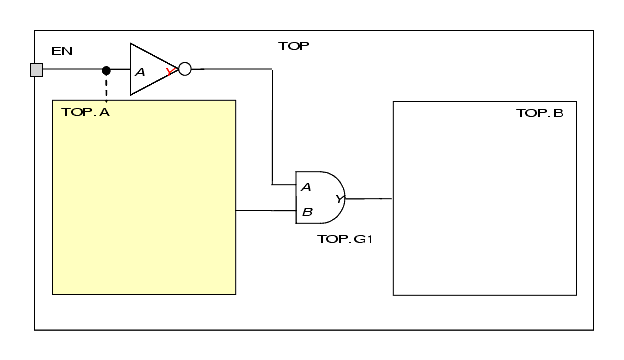
Figure 8: Isolation Cell Inference
Reporting Isolation Cells
You can list all defined isolation cells using the report_isolation_cells command as follows:
leda> report_isolation_cells ===== Isolation cells ===== by cell type: * with set_isolation_cell: <cell_type_1> <cell_type_2> ... <cell_type_N> * from DB libraries: <cell_type_1> <cell_type_2> ... <cell_type_N> by instance: * with set_isolation_cell: <cell_instance_1> <cell_instance_2> ... <cell_instance_N> * with set_isolation_cell -instances: <cell_instance_1> <cell_instance_2> ... <cell_instance_N> * from DB libraries: <cell_instance_1> : <library> <cell_instance_2> : <library> ... <cell_instance_N> : <library> * from $isolate calls: <cell_instance_1> <cell_instance_2> ... <cell_instance_N> * recognized: <cell_instance_1> <cell_instance_2> ... <cell_instance_N>Leda issues a warning message if you execute the report_isolation_cells command when the recognition has been enabled but the checks have not been run.
Specifying Power Switches
You can use the command set_power_switch, only if the PG-Netlist has blocks that can be shutdown (multi-power != multi-voltage) and that are isolated by power switches at block-level, typically using coarse-grained MTCMOS switches (other isolation techniques exist, e.g. using fine-grained instead of coarse-grained MTCMOS switches). In this case, you should specify the names of the power switch cells so that the power domain inference can by-pass power switches. This is done using the set_power_switch command as shown in the Figure 9.
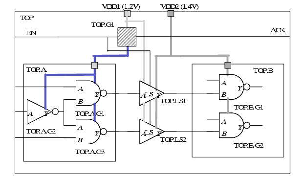
In Figure 9, power domain inferencing via the source port of specified net VDD1 stops on cell TOP.G1, because Leda does not recognize the switch functionality of the cell.
To identify this cell as a power switch, you need to use the set_power_switch command.
leda> set_power_switch <cell_name_list>Leda bypasses instances of specified power switch cells to follow inferencing. This step is similar in getting the internal power net to reach connected cells.
Reporting Power Switches
You need to use the command report_power_switches, to report the power switches
leda> report_power_switches===== Power switches =====
by cell type:
* with set_power_switch:
<cell_type_1>
<cell_type_2>
<cell_type_N>
by instance:
Specifying Power Cell Pins
The following section describes how you can specify the power cell pins.
Specifying Pins of a Power Library Cell and their Required Voltage Levels
You can specify the pin names and their required voltage levels for the power library cells in the following ways:
- If the cell is a DB cell, Leda reads the pins defined in the DB cell as well as their predefined attributes input_signal_level and output_signal_level. These attributes reference a power rail that is defined in the same DB library, at a specific voltage level use the power_rail function. For example, "input_signal_level: VDD1;" and "power_rail (VDD1, 1.2);".
- If the cell has been defined with a Tcl command or is a DB cell, you can specify the pin names and their corresponding voltage levels with the set_pin_voltage Tcl command as follows:
leda> set_pin_voltage <cell_name> <pin_name> <voltage_float_val>Here, cell names are Verilog module/primitive names or VHDL entity names. For example:
leda> set_pin_voltage LS12V A 1.2 leda> set_pin_voltage LS9_12V Y 0.9If the cell is a DB cell, the values set by the set_pin_voltage command supersede the values of the DB attributes input_signal_level and output_signal_level, if these attributes are defined.
Leda uses the pin names and voltage level information. For example, when checking that the pins of a level shifter or an isolation cell are connected to the correct voltage domains. For example, see rules LSPINVOLT and ICPINVOLT.
You can list all pin voltage values defined for a given cell with the report_pin_voltages Tcl command.
leda> report_pin_voltages <cell_name>For example:
leda> report_pin_voltages LS9_12V ===== Cell LS9_12V pin voltages ===== Pin A : 1.2 volt (DB) Pin Y : 0.9 volt (Tcl) Pin EN : <not found>Specifying Power Pins in Standard Cells
If a library cell contains additional pins that are intended to be used as pg-pins, Leda cannot identify them automatically. In this case, you need to use the set_power_pin command in the Leda shell to indicate the pins. The command is used as follows:
leda> set_power_pin <cell name> <pin name> -power | -gndFor example:
leda> set_power_pin CELL VDD -power leda> set_power_pin "CELL" VSS -gndTo apply on all cells, put "" as cell name.
leda> set_power_pin "" VPWR -power leda> set_power_pin "" VGND -gndFor level shifters and other multi-voltage cells, you need to qualify both power pins.
Specifying Enable Pin Names
You can specify the enable pin (one only, if any) for the power library cells in the following ways:
- If the cell is a DB cell and if one pin of the cell has the Boolean attribute isolation_cell_enable_pin set to true, then the corresponding pin is the enable pin.
- If the cell was defined with a Tcl command, you can specify the enable pin name with the set_enable_pin Tcl command as follows:
leda> set_enable_pin <cell_name> <enable_pin_name>Here, cell names are Verilog module/primitive names or VHDL entity names. For example:
leda> set_enable_pin IC12V ENThe enable pin information is used to determine if a level shifter can be used as an isolation cell as well, or more generally for checks requiring the enable functionality and its corresponding pin.
You can find the enable pin for a given cell, if any, with the command report_enable_pin.
leda> report_enable_pin <cell_name>For example:
leda> report_enable_pin IC12V Enable pin of IC12V: EN leda> report_enable_pin IC12VB Enable pin of IC12VB: <not found>Note that the enable pin can also be defined with a set_pin_voltage command. However each command has a different purpose. Command set_enable_pin defines the enable functionality of the pin, and set_pin_voltage defines the name of the pin and its voltage, regardless of its functionality.
Power Checks
This section contains some examples of how Leda can combine power-related information from different sources (RTL, Tcl, PG-Netlist) with an extensive set of prepackaged rules to create and test a complete and coherent power environment.
Checking Level Shifters
The Verilog code and Figure 10 shows a scenario, in which an extra (useless) level shifter is present on the path of a signal that is passing from module Top.A to module Top.B.
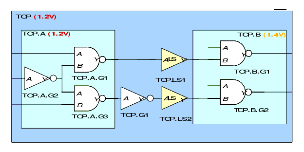
The corresponding verilog code of Figure 9 is as follows:
module A (Y1, Y2, A1, A2, A3); output Y1, Y2; input A1, A2, A3; wire INT; NAND2CELL G1(Y1, A1, INT); NOTCELL G2(INT, A2); NAND2CELL G3(Y2, INT, A3); endmodule module B (Y1, Y2, A1, A2); output Y1, Y2; input A1, A2; wire INT1, INT2; NAND2CELL G1(Y1, A1, INT1); NAND2CELL G2(Y2, A2, INT2); endmodule module TOP(Y1, Y2, A1, A2, A3); output Y1, Y2; input A1, A2, A3; wire INT1, INT2, INT3, INT4, INT5; A IA(INT1, INT2, A1, A2, A3); B IB(Y1, Y2, INT4, INT5); NOTCELL G1(INT3, INT2); LSCELL LS1(INT4, INT1); LSCELL LS2(INT5, INT3);endmodule
By using the following power Tcl commands, Leda identifies the unwanted level shifter present in the circuit as shown in Figure 11:
leda> create_power_net_info VDD12 -power -nominal_voltages {1.2} leda> create_power_net_info VDD14 -power -nominal_voltages {1.4} leda> create_power_domain POW12 #No cell is specified. So, power domain is associated to TOP leda> create_power_domain POW12A -object_list [get_cells IA] -power_down leda> create_power_domain POW14B -object_list [get_cells IB] -power_down leda> connect_power_domain POW12 -primary_power_net VDD12 leda> connect_power_domain POW12A -primary_power_net VDD12 leda> connect_power_domain POW14B -primary_power_net VDD14 leda> check -p POWER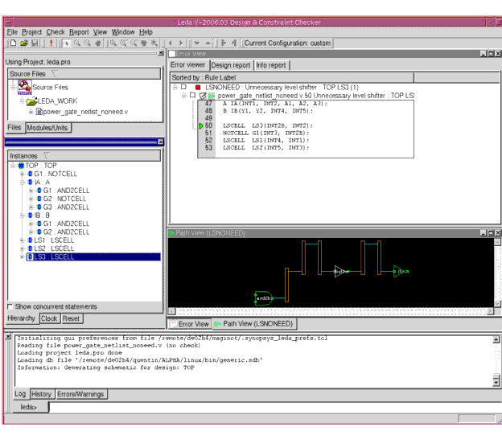
Checking Isolation Cells
The following example illustrates how information from RTL can be combined with information from the shell to test for missing isolation cells. In Figure 12, TOP.IC1 is an isolation cell.
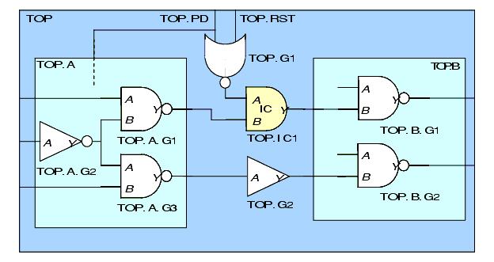
You can tell Leda that you want TOP.IC12 to act as an isolation cell in three different ways:
- By explicitly instantiating a DB cell that is an isolation cell
- By writing the Verilog code for the TOP module as follows:
module TOP(Y1, Y2, A1, A2, A3, PD, RST); output Y1, Y2; input A1, A2, A3, PD, RST; wire INT1, INT2, INT3, INT4, INT5; A IA(INT1, INT2, A1, A2, A3, PD); B IB(Y1, Y2, INT4, INT5); NOR2CELL G1(INT3, PD, RST); ICCELL IC1(INT4, INT1, INT3); BUFCELL G2(INT5, INT2); endmoduleand then setting ICCELL as an isolation cell in the shell.
leda> set_isolation_cell ICCELL$isolate(INT4, INT3, INT1,1'b0);
- By using the $isolate call and replacing the instantiation of ICCELL in the Verilog code with:
Suppose you create the following power domain:
leda> create_power_domain POWA -power_down -power_down_ctrl [get_ports PD] -object_list [get_cells IA]You can see there's an isolation cell missing on the path containing TOP.G2. Regardless of how you inferred the isolation cells, running the following command causes the rule ICINSOUT to be flagged as follows:
leda> check -p POWER 51: wire INT1, INT2, INT3, INT4, INT5; ^ power_test_iso_noauto_missing.v:51: ISOLATION_CELLS> [ERROR] ICINSOUT: Missing isolation cell for power domain POWA: TOP.INT2 /remote/ledascratch/kobrien/kobrien_leda_dev_fr/leda/tests/src/functiona l/LowPower/power_test_iso_noauto_missing/power_test_iso_noauto_missing.v :4: :Y: From pin: TOP.IA.G3.Y /remote/ledascratch/kobrien/kobrien_leda_dev_fr/leda/tests/src/functiona l/LowPower/power_test_iso_noauto_missing/power_test_iso_noauto_missing.v :16: :A: To pin: TOP.G2.AChecking Standard Cells
As an example of how Leda checks standard cells, Figure 13 illustrates how Leda detects that the cell TOP.G1 is badly located because it is connected to the primary power net (VDD1) of power domain POWA but not contained within POWA power regions.
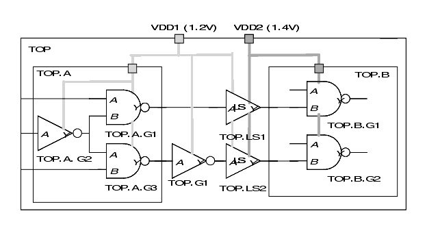
leda> create_power_net_info VDD1 -power -nominal_voltages {1.2} - source_port TOP.VDD1 leda> create_power_net_info VDD2 -power -nominal_voltages {1.4} - source_port TOP.VDD2 leda> create_power_domain POW_TOP leda> connect_power_domain POW_TOP -primary_power_net VDD2 leda> create_power_domain POWA -object_list [get_cells A] leda> connect_power_domain POWA -primary_power_net VDD1 leda> infer_power_domains -power_nets {VDD1 VDD2} Inferring power domain PD1 from power net VDD1 ... Error: Cell 'TOP.G1' is connected to primary power net 'VDD1' while located in power region of power domain 'POW_TOP' connected to primary power net 'VDD2'. (POW-014) Inference of power domain PD1 completed. Inferring power domain PD2 from power net VDD2 ... Inference of power domain PD2 completed.Operating Environment Setting
The operating environment of a cell is a collection of all environmental factors that are needed to fully define the timing/power behavior of the cell. You can use the command set_voltage to define the operating voltage for supplied power nets.
Syntax
set_voltage <max_case_voltage> [-min <min_case_voltage>] \ -object_list <power_net_list>You need to make sure that the following conditions are met when setting the operating voltage to power nets:
- The voltages set by the command set_voltage must fall within the ranges specified by the command create_power_net_info.
- The command set_voltage can be applied on an internally generated power net, but value must fall within its inherited voltage ranges and less than its parent.
- The operating voltage of the power net driving the design-level (top) power domain must match the operating voltage of the design level operating condition.
Relative Always on Relationship Setting
You can use the set_relative_always_on command to create relative always on relationship between power domains. This information is used to check if isolation cells are mandatory on nets crossing power domains on.
Syntax
set_relative_always_on <power_domain_name> [-relative_to \ <power_domain_list>]The significance of relative always on setting is that, even though two power domains may be shut down, and if one power domain is always on relative to the other power domain, then you don't need an isolation cell on the net crossing from the power domain that is always on, to the relative power domain.
The following example illustrates how command set_relative_always_on could be used in creating a relative always on relationship between power domains.
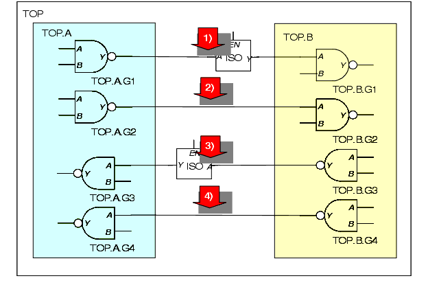
Figure 14: A Sample Schematic to Highlight Usage of set_relative_always_on
The power domains are configured as follows:
leda> create_power_domain PD leda> create_power_domain PDA -object_list [get_cells A] -power_down leda> create_power_domain PDB -object_list [get_cells B] -power_downThe results for isolation cells check is listed below:
Table 2: Isolation Cells Checks without set_relative_always_on
Path 1 - from A to B isolated Path 2 - from A to B Yes Path 3 - from B to A isolated Path 4 - from B to A Yes Now, we configure that power domain PDA is always on relative to power domain PDB using command set_relative_always_on.
leda> set_relative_always_on PDA -relative_to PDBThe results of isolation cells checks after using set_relative_always_on are tabulated as follows:
Table 3: Isolation Cells Checks with set_relative_always_on
Path 1 - from A to B isolated Yes Path 2 - from A to B Path 3 - from B to A isolated Path 4 - from B to A Yes Verilog $retain System Task
To describe retention cells with $retain, the Verilog system task should be used as follows:
$retain (<save>, <save_sense>, <restore>, <restore_sense>, <instance>
{, <instance>} );
Arguments
save Signal responsible to save the register values into the retention (or shadow) registers. This signal must be a valid scalar (1-bit wide) net.
save_sense A constant expression that indicates the active sense of the save signal. If the expression is wider than one bit, only the least significant bit determines the sense. The 1-bit sense can take the value 0 or 1. A value of X or Z will result in an error.
restore Signal responsible for restoring the register values from the retention (or shadow) registers. This signal must be a valid scalar (1-bit wide) net.
restore_sense A constant expression that indicates the active sense of the restore signal. If the expression is wider than one bit, only the least significant bit determines the sense. The 1-bit sense can take the value 0 or 1. A value of X or Z will result in an error.
instances A list of instances whose registers exhibit retention through the powered down state. Every memory element within the specified instances will have an associated retention register that is controlled by the given save/restore signals. Named blocks and hierarchical instance names are not allowed. Instance names can be specified by wildcard expressions.
For example:
$retain ( savecntl, 1, savecntl, 0, mmu, rla, "u*s" );The above syntax specifies a retention register for the instances named mmu, rla, and all instances whose name begins with u and end with s. The savecntl signal controls both the save and restore operations of the retention register. A positive transition saves the memory state into the retention registers, and a negative transition restores the state from the retention registers.
You can specify any instance present in the design only once in the $retain system task. The instance that you specify in a $retain system task completely controls the retention behavior of the specified instance.
If you do not explicitly specify an instance in a $retain system task, then the closest ancestor in the instance hierarchy that is explicitly specified in the $retain system task controls the retention behavior. If the ancestor is not present, the instance shall not exhibit retention.
The following rules have to be followed while using a $retain system task:
- A $retain system task can occur only at the top level of an initial block.
- A $retain system task should not be present within any control structure like if, while, for, case, etc.
- A $retain system task should not be controlled by a timing construct.
Retained Instances Specification and Always on Synthesis Consequence
Leda considers those register located in the specified instances as retention registers. Leda will handle isolation checks on such registers when they are start point or end point of domain crossing paths.
Support of Always-on Pins
Leda recognizes the always_on pins by the following ways:
Pin Level Library Attribute
Leda recognizes an always_on pin if the information is specified in the library file. For example:
library Lib_A { ... define("always_on", "pin", "Boolean") cell ISO_BUF { ... Pin en { ... always_on: "true" } } }
Automatic Inference of Always_on Pins
Leda can automatically infer always_on pins. Leda infers the enable pins of an isolation cell, enable pin of a level shifter present in a power down domain, and the power switches control pins automatically as always_on pins.
Tcl command
You can specify an always_on pin using the set_attribute Tcl command. For example:
set_attribute -type boolean [get_pins H1/U1/A] always_on "true"
Support of Always-on Library Cells
Leda recognizes an always_on library cell if the attribute always_on is set to true in the library file. For example:
library Lib_A { ... define ("always_on", "cell", "Boolean") cell AO_BUF { ... always_on: "true" } }
Power Tcl commands
Following are the command reference information for the built-in power Tcl commands that you can use to manage the rules that run against your HDL design files. To see the help for all the commands implemented in Leda, use the help -v switch from the Tcl prompt in the Tcl console at the bottom of the GUI or in the Tcl shell when you are not running the GUI:
Options shaded in grey color are ignored by Leda.
connect_power_domain
Use the connect_power_domain command to connect a power domain to power net information.
Syntax
connect_power_domain <name> [-primary_power_net <name>] [-backup_power_net <name>] [-internal_power_net <name>] [-primary_gnd_net <name>] [-backup_gnd_net <name>] [-internal_gnd_net <name>]Arguments
-primary_power_net Specify the primary power net name.
-primary_ground_net Specify the primary ground net name.
-backup_power_net Specify the backup power net name.
-backup_ground_net Specify the backup ground net name.
-internal_power_net Specify the internal power net name.
-internal_ground_net Specify the internal ground net name.
The following conditions should be met during connection to handle internal power nets generation:
- The names supplied for -internal_power_net and -internal_ground_net options should not be used as a name of created power nets.
- The corresponding primary connection must be supply to allow inheritance between the primary net and the internal net.
- The generated power nets can only be used in primary connections when setting up subnetting relationships
create_operating_conditions
Use the create_operating_conditions command to create a new operating condition in the specified library.
Syntax
create_operating_conditions [-name name] \
-library { lib_name1 lib_name2...} -voltage voltage_value
-process <process_value> -temperature <temperature>
[-tree_type tree_type] [-calc_mode calc_mode]
[-rail_voltages rail_value_pairs]
Arguments
-name Specify the operating condition name.
-library Specify the library names.
-process Specify the process value (process multiplier range should
be between 0 to 100.
-temperature Specify the temperature (range -300 to 500).
-voltage Specify the voltage value (ranging between 0 and 1000)
-tree_type Specify the tree type. The default is balanced tree.
-calc_mode Specify the calc_mode. The default is unknown.
-rail_voltages Specify the DPCM rail voltages list as "name value" pair.
create_power_domain
Use the create_power_domain command to create a power domain.
Syntax
create_power_domain <domain_name> [-power_down] [-power_down_ack <net or pin>] [-power_down_ctrl <net or pin>] [-object_list <cell set>] [-power_down_ack_sense <0 or 1>] \ [-power_down_ctrl_sense <0 or 1>]Arguments
domain_name Specify the power domain name within a quoted string.
-power_down Specify this option to power down.
-power_down_ctrl Specify the single bit net that powers down the domain. If the value of the net is 1, then the domain is powered-down (always active high). If this option is not used, then the corresponding power domain is always on.
-power_down_ack Specify the single bit net that acknowledges the power down state of a domain.
-object_list Specify the list of cells that should be associated with this power domain. If no cell set is present, then this command creates the top level power domain for the design.
-power_down_ack Specify the power down ack signal sense.
_sense-power_down_ctrl Specify the power down signal sense.
_sensecreate_power_net_info
Use the create_power_net_info command to create a power net information.
Syntax
create_power_net_info [-power] | [-gnd] [-switchable]
[-voltage_ranges {min_v1 max_v1 min_v2 max_v2 ...}] \
[-nominal_voltages {NOM_V1 NOM_V2 ... }]\
[-source_port design_port] name
Arguments
-power, -gnd Indicates if the net is a power net or a ground net (ground nets are ignored by Leda checks).
-voltage_range Specify a range of legal voltage values.
-switchable Power net could be cut off externally using this option.
-nominal_voltages Specify a list of expected nominal voltage values allowed on this power net. If no voltage values are specified with this command, then it assumes the voltage values of the design level's opcond.
-source_port Specify the top level port in the design that is the source of this power/gnd net. It is kept to allow inference of power domains from power net trees.
Command create_power_net_info should only be used to create 'source' power nets external to all power domains. Internal power nets for power domains is generated automatically, and inherits the voltage properties of their respective parent power nets
delete_operating_conditions
Use the delete_operating_conditions command to delete the operating conditions.
Syntax
delete_operating_conditions [-name name] \
-library { lib_name1 lib_name2...}
Arguments
-name Specify the operating condition name.
-library Specify the library names.
disable_isolation_cell_recognition
Use the disable_isolation_cell_recognition command to disable the recognition of isolation cells.
Syntax
disable_isolation_cell_recognition
enable_isolation_cell_recognition
By default, Leda accepts only those DB cells with the attribute is_isolation_cell or those cells/modules specified as isolation cell with the set_isolation_cell command as valid isolation cells. Use the enable_isolation_cell_recognition command to force the checker to accept any standard cell having the AND or the OR function as a possible isolation cell. In such a case, the criteria for a standard cell to be recognized as an isolation cell for a given power domain is as follows:
Syntax
- Either one of the inputs of the cell is directly or indirectly (through combinatorial logic) connected to an output of the given power domain, or the output of the cell is directly/indirectly connected to an input of the given power domain.
- An input of the cell is directly/indirectly connected to the control signal(s) specified for the given power domain.
enable_isolation_cell_recognition [-strict]
Arguments
-strict Enables the strict matching mode when recognizing an
isolation cell.
get_all_input_boundaries_from_power_domain
Use the get_all_input_boundaries_from_power_domain command to get the list of input pins of cells used by the checks on power domains.
Syntax
get_all_input_boundaries_from_power_domain <inferred_power_domain_name>
get_all_output_boundaries_from_power_domain
Use the get_all_output_boundaries_from_power_domain command to get the list of output pins of cells used by the checks on power domains.
Syntax
get_all_output_boundaries_from_power_domain <inferred_power_domain_name>
get_cells
Use the get_cells command to create a list of cells.
Syntax
get_cells [-hierarchical] [-filter expression] [-quiet] [-regexp]
[-nocase] [-exact] [-of_objects objects] [patterns]
Arguments
-hierarchical Specify this option to find objects throughout hierarchy.
expression Specify the expression to filter collection with this expression.
-quiet Use this option to suppress all messages.
-regexp Patterns are regular expressions.
-nocase Regular expression matches are case sensitive. Use this option to make it case insensitive.
-exact Wildcards are treated as plain characters.
-of_objects Specify this option to get cells related to these objects.
patterns Specify the list of cell name patterns.
get_clocks
Use the get_clocks command to create a collection of clocks.
Syntax
get_cells [-hierarchical] [-filter expression] [-quiet] [-regexp]
[-nocase] [-exact] [patterns]
Arguments
-hierarchical Specify this option to find objects throughout hierarchy.
expression Specify the expression to filter collection with this expression.
-quiet Use this option to suppress all messages.
-regexp Patterns are regular expressions.
-nocase Regular expression matches are case sensitive. Use this option to make it case insensitive.
-exact Wildcards are treated as plain characters.
-of_objects Specify this option to get cells related to these objects.
get_nets
Use the get_nets command to create a list of pins.
Syntax
get_nets [-hierarchical] [-filter expression] [-quiet] [-regexp]
[-nocase] [-exact] [-of_objects objects] [patterns]
Arguments
-hierarchical Specify this option to find objects throughout hierarchy.
expression Specify the expression to filter collection with this expression.
-quiet Use this option to suppress all messages.
-regexp Patterns are regular expressions.
-nocase Regular expression matches are case sensitive. Use this option to make it case insensitive.
-exact Wildcards are treated as plain characters.
-of_objects Specify this option to get ports related to these objects.
patterns Specify the list of net name patterns.
get_nth_power_net
Use the get_nth_power_net command to return the name of the nth power net.
Syntax
get_nth_power_net name
Arguments
name Specify the power domain name.
get_pins
Use the get_pins command to create a list of nets.
Syntax
get_pins [-hierarchical] [-filter expression] [-quiet] [-regexp]
[-nocase] [-exact] [-of_objects objects] [patterns]
Arguments
-hierarchical Specify this option to find objects throughout hierarchy.
expression Specify the expression to filter collection with this expression.
-quiet Use this option to suppress all messages.
-regexp Patterns are regular expressions.
-nocase Regular expression matches are case sensitive. Use this option to make it case insensitive.
-exact Wildcards are treated as plain characters.
-of_objects Specify this option to get pins related to these objects.
patterns Specify the list of pin name patterns.
get_ports
Use the get_ports command to create a list of ports.
Syntax
get_ports [-hierarchical] [-filter expression] [-quiet] [-regexp]
[-nocase] [-exact] [-of_objects objects] [patterns]
Arguments
-hierarchical Specify this option to find objects throughout hierarchy.
expression Specify the expression to filter collection with this expression.
-quiet Use this option to suppress all messages.
-regexp Patterns are regular expressions.
-nocase Regular expression matches are case sensitive. Use this option to make it case insensitive.
-exact Wildcards are treated as plain characters.
-of_objects Specify this option to get ports related to these objects.
patterns Specify the list of port name patterns.
get_power_cells
Use the get_power_cells command to return the cells of a given power domain.
Syntax
get_power_cells name
Arguments
name Specify the power domain name.
get_power_domains
Use the get_power_domains command to create a list of power domains.
Syntax
get_power_domains [-filter expression] [-quiet] [-regexp]
[-nocase] [-exact] [patterns]
Arguments
expression Specify the expression to filter collection with this expression.
-quiet Use this option to suppress all messages.
-regexp Patterns are regular expressions.
-nocase Regular expression matches are case sensitive. Use this option to make it case insensitive.
-exact Wildcards are treated as plain characters.
patterns Specify the list of port name patterns.
get_power_down
Use the get_power_down command to return the power down net associated with the given power domain.
Syntax
get_power_down name
Arguments
name Specify the power domain name.
get_power_down_ack
Use the get_power_down_ack command to return the power down ack net associated with the given power domain.
Syntax
get_power_down_ack name
Arguments
name Specify the power domain name.
get_power_net_max_voltage
Use the get_power_net_max_voltage command to return the maximum value of the power net voltage values.
Syntax
get_power_net_max_voltage name
Arguments
name Specify the power net name.
get_power_net_min_voltage
Use the get_power_net_min_voltage command to return the minimum value of the power net voltage values.
Syntax
get_power_net_min_voltage name
Arguments
name Specify the power net name.
get_power_net_source_port
Use the get_power_net_source_port command to return the design port that is the source of the power net.
Syntax
get_power_net_source_port name
Arguments
name Specify the power net name.
get_power_net_type
Use the get_power_net_type command to return the type of the power net (GND or POWER).
Syntax
get_power_net_type name
Arguments
name Specify the power net name.
getn_power_net
Use the getn_power_net command to return the number of power nets.
Syntax
getn_power_net
infer_power_domain
Use the infer_power_domain command to infer a power domain in a PG-Netlist from a power net.
Syntax
infer_power_domain [-power_net <name>] domain_name ]
Arguments
-power_net Specify the power net name.
domain_name Specify the power domain name.
infer_power_domains
Use the infer_power_domains command to infer a power domain from the RTL ($power).
Syntax
infer_power_domains [-verbose] [-power_nets <power_net_list>]
Arguments
-verbose Specifies that it is in verbose mode
-power_nets Specify the power net list.
remove_isolation_cell
Use the remove_isolation_cell command to specify the isolation cell to be removed from the list of isolation cells created by consecutive calls to the set_isolation_cell command
Syntax
remove_isolation_cell {list of cell names} | -instance {instance_list}
Only the isolation cells defined with set_isolation_cell can be removed (not the DB cells).
remove_level_shifter
Use the remove_level_shifter command to specify the level shifter cells to be removed from the list of level shifter cells created by consecutive calls to the set_level_shifter command.
Syntax
remove_level_shifter {list of cell names}
Only the cells defined with set_level_shifter can be removed (not the DB cells).
remove_power_domain
Use the remove_power_domain command to remove a specific power domain or specific modules/sub-hierarchies from a given power domain.
Syntax
remove_power_domain [power_domains | -all]
remove_power_net_info
Use the remove_power_net_info command to remove a power net specification.
Syntax
remove_power_net_info [ -all ] | domain_name
Arguments
-all Remove all the power net from the design.
domain_name Specify the name of the power net.
report_enable_pin
Use the report_enable_pin command to list the enable pin if any for a given cell.
Syntax
report_clock_gating_cells cell_name
Example
This command will list the enable pin of the cell IC12V.
leda> report_enable_pin IC12V Enable pin of IC12V: EN leda> report_enable_pin IC12VB Enable pin of IC12V: <not found>report_isolation_cells
Use the report_isolation_cells command to list all the defined isolation cells.
Syntax
report_isolation_cells
Example
This command will list all the isolation cells.
leda> report_isolation_cellsThis command will report automatically recognized isolation cells (when enable_isolation_cell_recognition is set) only after one of the rules ICINSALL, ICINSIN or ICINSOUT check has been executed.
report_level_shifter
Use the report_level_shifter command to list all the defined level shifters.
Syntax
report_level_shifter
Example
This command will list all the defined level shifters.
leda> report_level_shifterreport_operating_conditions
Use the report_operating_conditions command to report all or specific operating conditions of a given library.
Syntax
report_operating_conditions [-name name] \
-library { lib_name1 lib_name2...}
Arguments
-name Specify the operating condition name.
-library Specify the library names.
report_pin_voltages
Use the report_pin_voltage command to list all pin voltage values defined for a given cell.
Syntax
report_pin_voltages cell_name
Example
This command will list all the defined pin voltages of cell LS9_12V.
leda> report_pin_voltages LS9_12Vreport_power_domain
Use the report_power_domain command to report the information about the power domains.
Syntax
report_power_domain object_list
Arguments
object_list Specify the list of power domains to be reported.
Example
This command will list all the defined power domains.
leda> report_power_domainreport_power_net_info
Use the report_power_net_info command to remove the power net specifications.
Syntax
report_power_net_info [object_list ]
Arguments
object_list Specify the list of cells.
report_power_pins
Use the report_power_pins command to report the power pins of the given cell.
Syntax
report_power_pins cell
Arguments
cell Specify the cell name.
report_power_switches
Use the report_power_switches command to report the power switches.
Syntax
report_power_switches
reset_isolation_cell_recognition
Use the reset_isolation_cell_recognition command to reset the isolation cell database.
Syntax
reset_isolation_cell_recognition
set_operating_conditions
Use the set_operating_conditions command to set the operating conditions.
Syntax
set_operating_conditions [-library library] [-object_list object_list] \
[-max max_condition] [-min min_condition] \
[-max_library max_library] [-min_library min_library] \
[-max_phys <max_operating_condition_name>] \
[-min_phys <min_operating_condition_name>] \
[-object_list object_list] [-power_domains power_domain_list] \
[condition]
Arguments
-library Specify the library to search.
-max Specify the maximum operating condition name.
-min Specify the maximum operating condition name.
-max_library Specify the library containing maximum operating conditions.
-min_library Specify the library containing minimum operating conditions.
-max_phys Specify the name of the maximum phys tech operating conditions.
-min_library Specify the name of the minimum phys tech operating conditions.
-object_list Specify the port/cell objects.
-power_domains Specify the power domain objects.
condition Specify the single operating condition name.
set_power_domain
Use the set_power_domain command to set the power domain with given instances as power regions.
Syntax
set_power_domain -name <name> [-always_on] <instance_list>
Arguments
-name Specify the domain name.
-instance_list Specify the instance list.
set_power_domain_ctrl
Use the set_power_domain_ctrl command to associate control signals(s) with each power domain.
Syntax
set_power_domain_ctrl [-name domain_name] [-signals signal | {signal_list} value | {value_list}
Arguments
signal_list Specifies the list of hierarchical names of ports/signals.
value_list Specifies the list of values for the signals at which the corresponding power domain is switched on.
Example
This command will switch on power domain POW1 when TOP.CTRL1 is equal to 1 and TOP>CTRL2 is equal to 0.
leda> set_power_domain_ctrl -name POW1 -signals {TOP.CTRL1 TOP.CTRL2} 10set_power_off_value
Some low-power methodologies impose the output of isolation cells to be set to a specific fixed value (0 or 1) when the corresponding power domain is switched off. Use the set_power_off_value command to specify this fixed value for any isolation cell instance.
Syntax
set_power_off_value boolean_value {isolation_cell_instance_list}
Example
leda> set_power_off_value 0 TOP.A.ISCEL3
set_power_pin
Use the set_power_pin command to specify the power pins of the given cell.
Syntax
set_power_pin [-power cell pin] [-gnd cell pin]
set_power_switch
Use the set_power_switch command to specify the cell list as power switch cells.
Syntax
set_power_switch [ cell name list ]
Power switches are also recognized by a DB attribute.
set_relative_always_on
Use the set_relative_always_on command to create relative always on relationship between domains.
Syntax
set_relative_always_on <power_domain_name> [-relative_to \ <power_domain_list>]
Arguments
power_domain_name Specify the power domain.
set_voltage
Use the set_voltage command to define the operating voltage for the supplied power nets.
Syntax
set_voltage <max_case_voltage> [-min <min_case_voltage>] \ -object_list <power_net_list>
Arguments
min_case_voltage Specify the minimum case voltage.
max_case_voltage Specify the maximum case voltage.
Level-Shifters Ruleset
The following rules are from the Level-Shifters ruleset.
VDPAR
Message: Avoid disjoint voltage domains: %s1 and voltage domain: %s2
Description Do not split multiple voltage domains with the same voltage level into different sub-hierarchies of the design ("disjoint voltage domain"). Arguments: Disjoint hierarchical module names belonging to the same voltage domain: %s1 and %s2 are the disjoint voltage domains. Policy POWER Ruleset LEVEL_SHIFTERS Language VHDL/Verilog Type Hardware Severity Warning
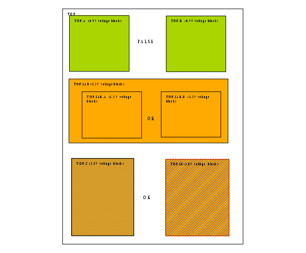
LSINSALL
Message: Missing level shifter from %f1 to %f2: %s1. From pin/signal (voltage %f1): %s2 to pin/signal (voltage %f2): %s3
Description A level shifter must be inserted on every connectivity path between logic-or-wires of two distinct voltage domains (with two different voltage levels). Arguments: Hierarchical names of ports/wires and voltage floating values of the corresponding voltage domains: %s1 is a wire at the highest hierarchical level on the checked path
%s2 is the latest logic output found on checked path in source voltage domain
%s3 is the first logic input found on checked path in destination voltage domain
%f1 is the voltage value of the source voltage domain
%f2 is the voltage value of the destination voltage domain.
Policy POWER Ruleset LEVEL_SHIFTERS Language VHDL/Verilog Type Hardware Severity Error
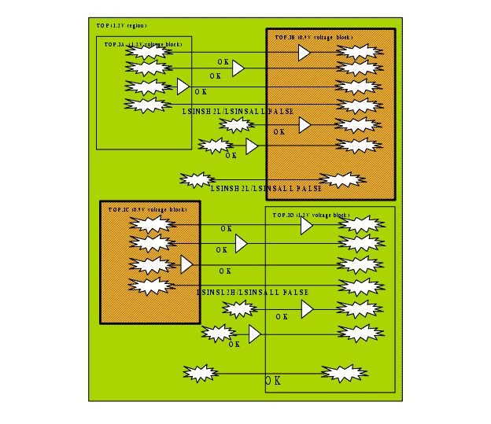
LSINSL2H
Message: Missing level shifter from %f1 to %f2: %s1. From pin/signal (voltage %f1): %s2 to pin/signal (voltage %f2): %s3.
Description A level shifter must be inserted on every connectivity path between logic-or-wires of two distinct voltage domains going from a lower to a higher voltage.Arguments: Hierarchical names of ports/wires and voltage floating values of the corresponding voltage domains: %s1 is a wire at the highest hierarchical level on the checked path
%s2 is the latest logic output found on checked path in source voltage domain
%s3 is the first logic input found on checked path in destination voltage domain
%f1 is the voltage value of the source voltage domain
%f2 is the voltage value of the destination voltage domain
Policy POWER Ruleset LEVEL_SHIFTERS Language VHDL/Verilog Type Hardware Severity Error
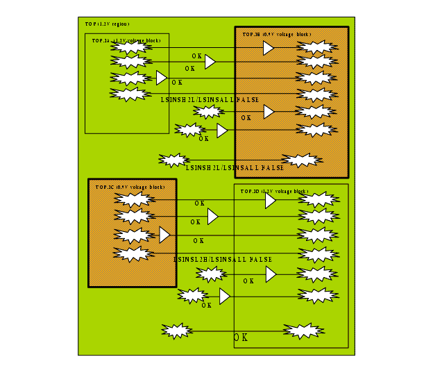
LSINSH2L
Message: Missing level shifter from %f1 to %f2: %s1. From pin/signal (voltage %f1): %s2 to pin/signal (voltage %f2): %s3.
Description A level shifter or a buffer must be inserted on every connectivity path between logic-or-wires of two distinct voltage domains going from a higher to a lower voltage.Arguments: Hierarchical names of ports/wires and voltage floating values of the corresponding voltage domains: %s1 is a wire at the highest hierarchical level on the checked path
%s2 is the latest logic output found on checked path in source voltage domain
%s3 is the first logic input found on checked path in destination voltage domain
%f1 is the voltage value of the source voltage domain
%f2 is the voltage value of the destination voltage domain
Policy POWER Ruleset LEVEL_SHIFTERS Language VHDL/Verilog Type Hardware Severity Error
LSNONEED
Message: Unnecessary level shifter: %s
Description Level shifters must not be inserted between voltage regions/blocks of the same voltage level.Arguments: Hierarchical name of the level shifter cell instance. Policy POWER Ruleset LEVEL_SHIFTERS Language VHDL/Verilog Type Hardware Severity Error LSREDSER
Message: Level shifter %s is unnecessary (redundant
with %s1): %s2
Description No more than one level shifter must be inserted on a connectivity path between two voltage domains.Arguments: Hierarchical names of the first level shifter cell instance found on the path and of the redundant level shifter cell instance. Policy POWER Ruleset LEVEL_SHIFTERS Language VHDL/Verilog Type Hardware Severity Error
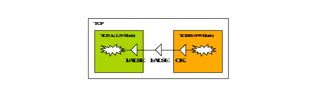
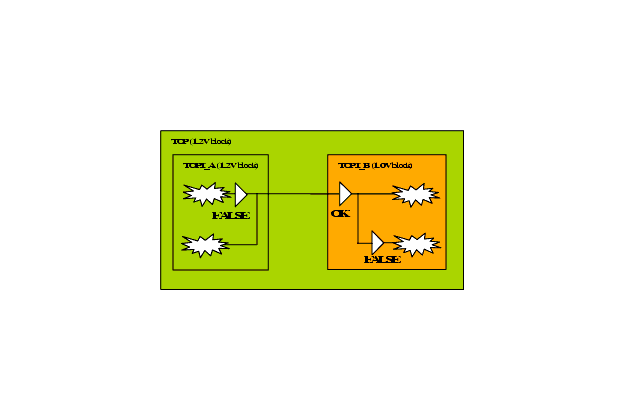
LSREDPAR
Message: Better split out wires after level shifters than before: %s1. The level shifter: %s2. The level shifter: %s3
Description It is better to split out wires after the level shifters than before in order to minimize the number of level shifters used.Arguments: Hierarchical name of the wire and hierarchical names of the level shifter cell instances. Policy POWER Ruleset LEVEL_SHIFTERS Language VHDL/Verilog Type Hardware Severity Warning
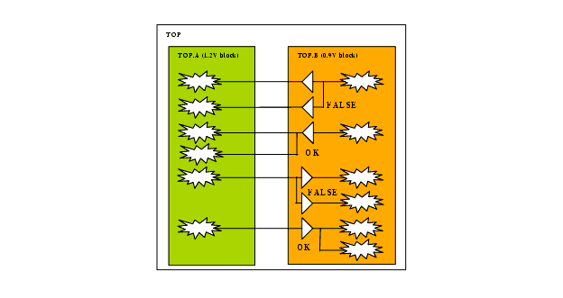
LSLOCALL
Message: Level shifter must be located in the lower voltage domain (voltage %f instead of %f / neutral region) %s
Description All level shifters must be located in the lower voltage domain.Arguments: Voltage value of correct voltage domain, voltage value of actual voltage domain or "neutral region", and hierarchical name of the level shifter cell instance. Policy POWER Ruleset LEVEL_SHIFTERS Language VHDL/Verilog Type Hardware Severity Warning LSLOCL2H
Message: Level shifter (low to high) must be located in the higher voltage domain (voltage %f instead of %f / neutral region) %s
Description Level shifters going from lower to higher voltage levels must be located in the higher voltage domain.Arguments: Voltage value of correct voltage domain, voltage value of actual voltage domain or "neutral region", and hierarchical name of the level shifter cell instance. Policy POWER Ruleset LEVEL_SHIFTERS Language VHDL/Verilog Type Hardware Severity Warning LSLOCH2L
Message: Level shifter (high to low) must be located in the lower voltage domain (voltage %f instead of %f / neutral region) %s
Description Level shifters going from higher to lower voltage levels must be located in the lower voltage domain.Arguments: Voltage value of correct voltage domain, voltage value of actual voltage domain or "neutral region", and hierarchical name of the level shifter cell instance. Policy POWER Ruleset LEVEL_SHIFTERS Language VHDL/Verilog Type Hardware Severity Warning
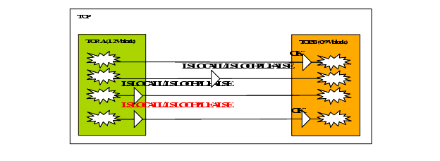
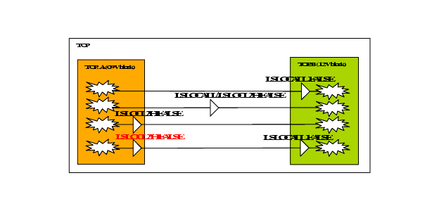
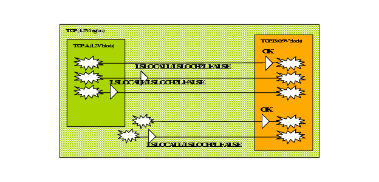
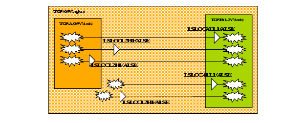
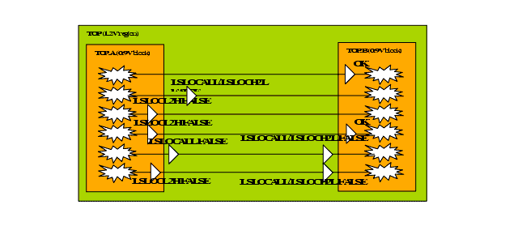
LSPOWALL
Message: Level shifter must be located outside power domain %s (in a region always powered-on): %s
Description Level shifters must be located outside the power domain, in a power domain that is always on. Arguments: Voltage value of correct voltage domain, voltage value of actual voltage domain or "neutral region", and hierarchical name of the level shifter cell instance. Policy POWER Ruleset LEVEL_SHIFTERS Language VHDL/Verilog Type Hardware Severity Warning
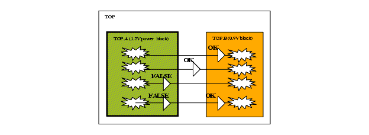
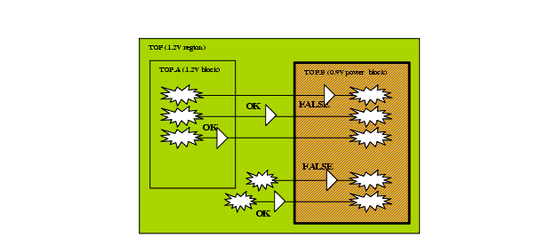
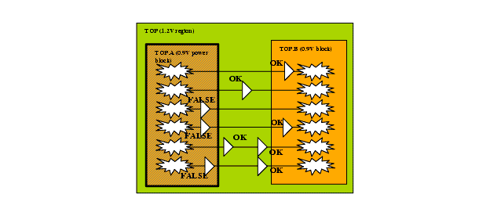
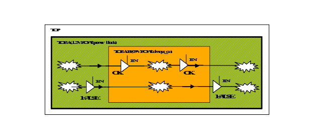
LSPINVOLT
Message: Level shifter badly connected: %s. Pin voltage is %f instead of %f: %s
Description Level shifter pins must be "connected" to the correct voltage domains. That is, the voltage levels of the two voltage domains separated by a given level shifter must match the voltage values specified for the two (in and out) pins of the given level shifter.Arguments: Hierarchical name of the level shifter cell instance, and for each incorrect pin: voltage value of actual voltage domain, specified voltage value for the pin, and cell pin name. Policy POWER Ruleset LEVEL_SHIFTERS Language VHDL/Verilog Type Hardware Severity Warning Isolation Cells Ruleset
Isolation cells can be standard isolation cells, or enabled level shifters with either the DB attribute level_shifter_enable_pin set to true for one of the pins or with a enable pin defined with the set_enable_pin command. The following rules comprise the Isolation cells ruleset.
ICINSALL
Message: Missing isolation cell for power domain %s1: %s2. From pin/signal: %s3 to pin/signal: %s4
Description Isolation cells must be inserted on any connectivity path of any port of a power domain. Arguments: %s1 is the power domain name (if defined)
%s2 is a wire on the checked path that is at the highest level of hierarchy
%s3 is the source port/wire
%s4 is the destination port/wire
Policy POWER Ruleset ISOLATION_CELLS Language VHDL/Verilog Type Hardware Severity Error
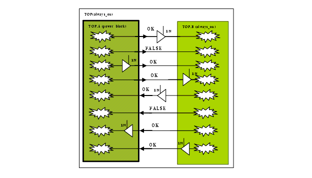
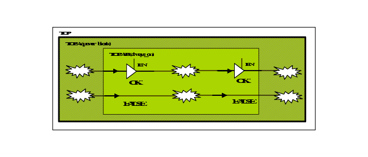
ICINSOUT
Message: Missing isolation cell for power domain %s1: %s2. From pin/signal: %s3 to pin/signal: %s4
Description Isolation cells must be inserted on any connectivity path of any output port of a power domain.Arguments: %s1 is the power domain name (if defined)
%s2 is a wire on the checked path that is at the highest level of hierarchy
%s3 is the source port/wire
%s4 is the destination port/wire
Policy POWER Ruleset ISOLATION_CELLS Language VHDL/Verilog Type Hardware Severity Error
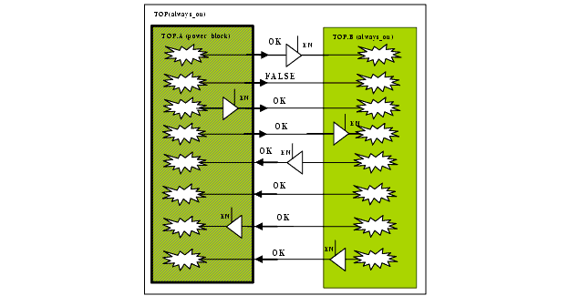
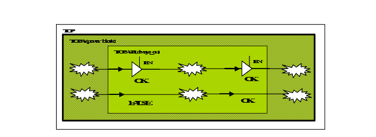
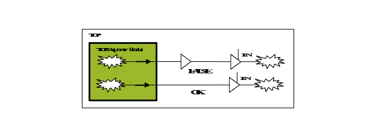
ICINSIN
Message: Missing isolation cell for power domain %s1: %s2. From pin/signal: %s3 to pin/signal: %s4
Description Isolation cells must be inserted on any connectivity path of any input port of a power domain. Arguments: %s1 is the power domain name (if defined)
%s2 is a wire on the checked path that is at the highest level of hierarchy
%s3 is the source port/wire
%s4 is the destination port/wire
Policy POWER Ruleset ISOLATION_CELLS Language VHDL/Verilog Type Hardware Severity Error
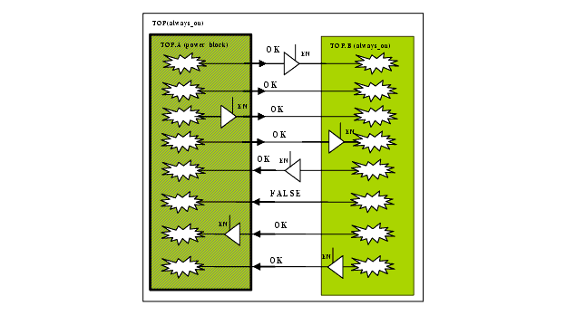
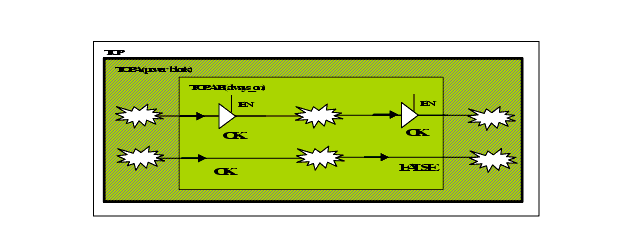
ICNONEED
Message: Isolation cell %s is unnecessary: %s
Description Isolation cells must not be inserted on a path that neither reaches a power domain input port nor originates from an output port of a power domain. Arguments: Hierarchical name of the isolation cell instance. Policy POWER Ruleset ISOLATION_CELLS Language VHDL/Verilog Type Hardware Severity Error
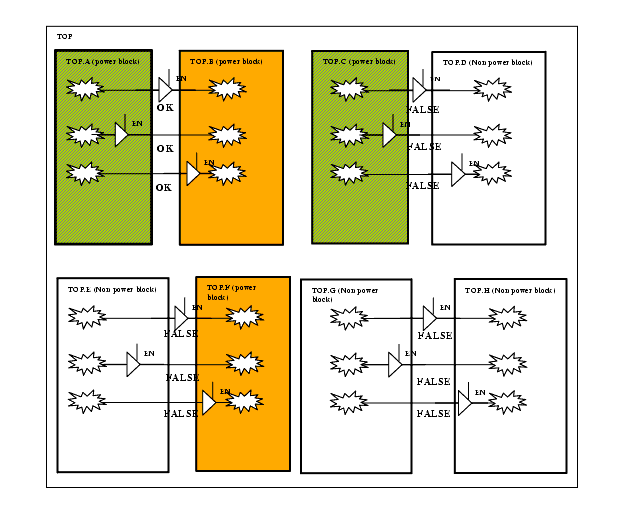
ICNONEEDIN
Message: Isolation cell %s is unnecessary: %s
Description Isolation cells must not be inserted on input boundaries of a power domainArguments: Hierarchical name of the isolation cell instance. Policy POWER Ruleset ISOLATION_CELLS Language VHDL/Verilog Type Hardware Severity Error
ICLOCALL
Message: Isolation cell must be located outside power domain %s (in a region always powered-on): %s
Description Isolation cells must be located outside the power domain, in a power domain that is always on.Arguments: Hierarchical name of the power domain (if defined), and hierarchical name of the isolation cell instance. Policy POWER Ruleset ISOLATION_CELLS Language VHDL/Verilog Type Hardware Severity Warning
ICNOBUFF
Message: No buffer is allowed between output port %s of power domain %s and isolation cell %s
Description No buffers are allowed between the output ports of a power domain and the isolation cells.Arguments: Hierarchical output port name, name of the power domain (if domain is named), and hierarchical name of the isolation cell instance. Policy POWER Ruleset ISOLATION_CELLS Language VHDL/Verilog Type Hardware Severity Error
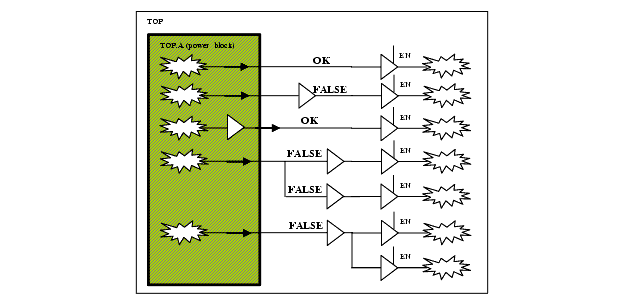
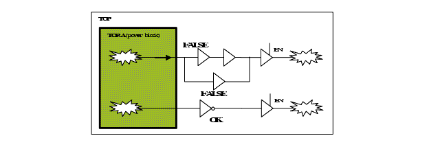
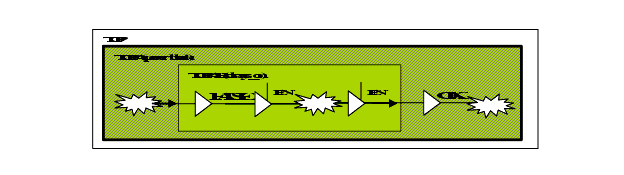
ICPINVOLT
Message: Pin of isolation cell %s should be connected to voltage %f instead of %f: %s
Description Isolation cell pins must be connected to the correct voltage domain (according to the pin voltage level information).Arguments: Hierarchical name of the isolation cell instance, correct voltage value for the pin and voltage value of actual voltage domain, and pin cell name. Policy POWER Ruleset ISOLATION_CELLS Language VHDL/Verilog Type Hardware Severity Error
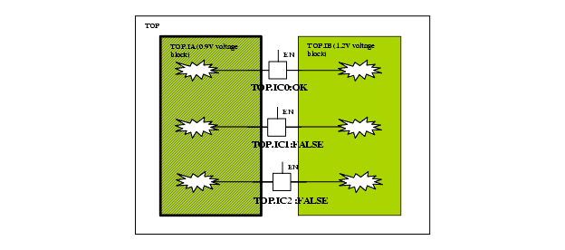
ICOFFVAL
Message: Isolation cell power off value mismatch with control specification of power domain %s1: %s2. Power off value is %s3 instead of %s4: %s5. Control signal power on value %s6: %s7
Description Isolation cell outputs must be set to a fixed logical value when their corresponding power domain is switched off (considering the controls defined by set_power_domain_ctrl, for the cells with values defined by set_power_off_value).Arguments: %s1 is the related power domain name (if domain is named)
%s2 is the hierarchical name of isolation cell instance
%s3 is the actual power off value
%s4 is the specified power off value
%s5 is the related output pin, and for each control signal
%s6 and %s7 are the control signal value and name
Policy POWER Ruleset ISOLATION_CELLS Language VHDL/Verilog Type Hardware Severity Error
RTL Ruleset
Leda has got rules to check the semantics and usage of $power and $isolate system calls. The following rules are from the RTL ruleset.
RTLPOW00
Message: Wrong number of arguments passed - at least 6 arguments are expected. Current $power statement will be ignored by Leda power checks
Description This rule checks if the $power system call is provided with the required number of arguments. Policy POWER Ruleset RTL Language Verilog Type Block-level Severity Warning
RTLPOW01
Message: First argument to $power (power domain name) must be a quoted string. Current $power statement will be ignored by Leda power checks
Description This rule checks if the first argument of $power is written as a string. Policy POWER Ruleset RTL Language Verilog Type Block-level Severity Warning
RTLPOW02
Message: Second argument to $power (power_on net) must be a valid signal name. Current $power statement will be ignored by Leda power checks
Description This rule checks if the second argument of $power is a valid signal name specifying the power_on net. Policy POWER Ruleset RTL Language Verilog Type Block-level Severity Warning
RTLPOW03
Message: Third argument to $power (on_sense expression) must be a valid expression. Current $power statement will be ignored by Leda power checks
Description This rule checks if the third argument of $power is a valid expression specifying the on_sense expression. Policy POWER Ruleset RTL Language Verilog Type Block-level Severity Warning
RTLPOW04
Message: Fourth argument to $power (power_on ack net) must be a valid signal name. Current $power statement will be ignored by Leda power checks
Description This rule checks if the fourth argument of $power is a valid signal name specifying the power_on ack net. Policy POWER Ruleset RTL Language Verilog Type Block-level Severity Warning
RTLPOW05
Message: Fifth argument to $power statement (ack_sense expression) must be a valid expression. Current $power statement will be ignored by Leda power checks
Description This rule checks if the fifth argument of $power is a valid expression specifying the ack_sense expression. Policy POWER Ruleset RTL Language Verilog Type Block-level Severity Warning
RTLPOW06
Message: Argument must be a valid instance name. Current $power statement will be ignored by Leda power checks: Argument %d
Description This rule checks if the instance name specified as argument is a valid instance name. Policy POWER Ruleset RTL Language Verilog Type Block-level Severity Warning
RTLPOW07
Message: $power must occur in an initial block
Description This rule checks if the $power system task call is present in an initial block. Policy POWER Ruleset RTL Language Verilog Type Block-level Severity Warning
Example
This is an example of an invalid Verilog code:
module top (out1, in1); input in1; output out1; wire pd_sig1, p_ack1; mod A (.in(in1), .out(out1) ); always begin $power("pd1", pd_sig1, p_ack1, "1", "top.A"); // FAIL end endmodule // top module mod (in, out); input in; output out; assign out = in; endmodule // modViolation:
9: $power("pd1", pd_sig1, p_ack1, "1", "top.A"); //FAIL ^ pow07_fail1.v:9: RTL> [WARNING] RTLPOW07: $power must occur in an initial block.This is an example of a valid Verilog code:
module top (out1, in1); input in1; output out1; wire pd_sig1, p_ack1; mod A (.in(in1), .out(out1) ); initial $power("pd1", pd_sig1, p_ack1, "1", "top.A"); endmodule // top module mod (in, out); input in; output out; assign out = in; endmodule // modRTLPOW08
Message: $power statement must not be nested within any control structure
Description This rule checks if the $power system task call is nested within any control structure. Policy POWER Ruleset RTL Language Verilog Type Block-level Severity Warning
Example
module top (out1, out2, in1, in2, sel); input in1, in2, sel; output out1, out2; wire pd_sig, p_ack; mod A (.in(in1), .out(out1) ); mod B (.in(in2), .out(out2) ); initial begin if ( sel ) $power("pd1", pd_sig, p_ack, "1", "top.A"); /* FAIL */ else $power("pd1", pd_sig, p_ack, "1", "top.B"); /* FAIL */ end endmodule // top module mod (in, out); input in; output out; assign out = in; endmodule // modViolation:
12: $power("pd1", pd_sig, p_ack, "1", "top.A"); /* FAIL */ ^ pow08_fail1.v:12: RTL> [WARNING] RTL_POW08: $power statement must not be nested within any control structure. 14: $power("pd1", pd_sig, p_ack, "1", "top.B"); /* FAIL */ ^ pow08_fail1.v:14: RTL> [WARNING] RTL_POW08: $power statement must not be nested within any control structure.RTLPOW08
Message: Power procedure call must not be nested within any control structure
Description This rule checks if the power procedure call is nested within any control structure. Policy POWER Ruleset RTL Language VHDL Type Block-level Severity Warning
Example
library SNPS_EXT, IEEE; use SNPS_EXT.power.all, IEEE.std_logic_1164.all; entity power_wrapper is port (power_on : std_logic_vector; power_ack : inout std_logic_vector; a, b, en : std_logic); end; architecture behav of power_wrapper is signal c : std_logic; begin -- IP1 : entity WORK.IP port map(a,b,c); P1: process begin -- process P1 if (en='1') then power("domain_name", power_on, "1", power_ack, "1", "IP1"); --FAIL wait; end if; end process P1; end;Violation:
23: power("domain_name", power_on, "1", power_ack, "1", "IP1"); ^^^^^ pow08_if.vhd:23: RTL> [WARNING] RTLPOW08: Power procedure call must not be nested within any control structure.RTLPOW09
Message: $power statement must not be preceded by any timing control
Description This rule checks if the $power system task call is not preceded by any timing control statement. Policy POWER Ruleset RTL Language Verilog Type Block-level Severity Warning
Example
module top (out1, in1); input in1; output out1; wire pd_sig1, p_ack1; mod A (.in(in1), .out(out1) ); initial begin #1 $power("pd1", pd_sig1, p_ack1, "1", "top.A"); /* FAIL */ end endmodule // top module mod (in, out); input in; output out; assign out = in; endmodule // modViolation:
8: #1 $power("pd1", pd_sig1, p_ack1, "1", "top.A");/* FAIL */ ^ pow09_fail1.v:8: RTL> [WARNING] RTL_POW09: $power statement must not be preceded by any timing control.RTLPOW09
Message: Power procedure call must not be preceded by any timing control
Description This rule checks if the power procedure call is not preceded by any timing control statement. Policy POWER Ruleset RTL Language VHDL Type Block-level Severity Warning
Example
library SNPS_EXT, IEEE; use SNPS_EXT.power.all, IEEE.std_logic_1164.all; entity power_wrapper is port (power_on : std_logic_vector; power_ack : inout std_logic_vector; a, b : std_logic); end; architecture behav of power_wrapper is signal c : std_logic; begin -- IP1 : entity WORK.IP port map(a, b, c); P1: process begin -- process P1 wait on power_on; power("domain_name", power_on, "1", power_ack, "1", "IP1"); --FAIL end process P1; end;Violation:
23: power("domain_name", power_on, "1", power_ack, "1", "IP1"); ^^^^^ pow09_wait_on.vhd:23: RTL> [WARNING] RTLPOW09:Power procedure call must not be preceded by any wait statement.RTLPOW10
Message: Each instance in a design may be named in a power statement only once. Instance name will be ignored in enclosing statement: %s"
Description Leda issues a warning message for each second or following appearance of a given instance name in a $power statement. Policy POWER Ruleset RTL Language Verilog Type Block-level Severity Warning
Rule RTLPOW10 cannot be deselected from the configuration. It is selected by default.
RTLPOW11
Message: Power domains cannot be redefined at different hierarchical levels. Current statement will be ignored in power domain elaboration
Description Leda issues a warning message for each second or following redundant $power statement. Policy POWER Ruleset RTL Language Verilog Type Block-level Severity Warning
Rule RTLPOW11 cannot be deselected from the configuration. It is selected by default.
RTLPOW20
Message: Signals passed as arguments to $power must be wires declared in the same module
Description This rule check if the signals passed to the $power system task call are wires declared in the same module. Policy POWER Ruleset RTL Language Verilog Type Block-level Severity Warning
Example
module top (out1, in1); input in1; output out1; wire pd_sig1, p_ack1; my_mod1 A (.out(out1), .in(in1), .pd_sig(pd_sig1), .p_ack(p_ack1) ); endmodule // top module my_mod1 (out, in, pd_sig, p_ack); input in, pd_sig, p_ack; output out; mod2 A (.out(out), .in(in)); initial $power("pd1", pd_sig, p_ack, "1", "top.A.A"); /* FAIL */ endmodule // mod module mod2 (in, out); input in; output out; assign out = in; endmodule // modViolation:
16: initial $power("pd1", pd_sig, p_ack, "1", "top.A.A") ^^^^^^ pow20_fail1.v:16: RTL> [WARNING] RTL_POW20: Signals passed as arguments to $power must be wires declared in the same module. 16: initial $power("pd1", pd_sig, p_ack, "1", "top.A.A"); ^^^^^ pow20_fail1.v:16: RTL> [WARNING] RTL_POW20: Signals passed as arguments to $power must be wires declared in the same module.RTLPOW20
Message: Signals passed as arguments to the power procedure call must be declared in the same design entity
Description This rule check if those signals passed as arguments to the power procedure are declared in the same design entity. Policy POWER Ruleset RTL Language VHDL Type Block-level Severity Warning
Example
-- p_package_power_sig.vhd library ieee; use ieee.std_logic_1164.all; package p_package_power_sig is signal power_on : std_logic; signal power_ack : std_logic; end package; -- pow20_fail1.vhd library SNPS_EXT, IEEE; use SNPS_EXT.power.all, IEEE.std_logic_1164.all; use work.p_package_power_sig.all; entity power_wrapper is port ( a, b: std_logic); end; architecture behav of power_wrapper is signal c : std_logic; begin -- IP1 : entity WORK.IP port map(a,b,c); P1: process begin -- process P1 power("domain_name", power_on, '1', power_ack, '1', "IP1"); --FAIL wait; end process P1; end;Violation:
22: power("domain_name", power_on, "1", power_ack, "1", "IP1"); ^^^^^ Pow20_fail1.vhd:22: RTL> [WARNING] RTLPOW20: Signals passed as arguments to the power procedure call must be declared in the same design entity.. 22: power("domain_name", power_on, "1", power_ack, "1", "IP1"); ^^^^^ Pow20_fail1.vhd:22: RTL> [WARNING] RTLPOW20: Signals passed as arguments to the power procedure call must be declared in the same design entity..RTLPOW21
Message: Register initialized by a constant
Description This rule checks that there are no constant initialization of registers which are also not assigned to within an always block (process statement). Policy POWER Ruleset RTL Language Verilog/VHDL Type Block-level Severity Warning
Example
This is an example of an invalid Verilog code:
module top (out1, out2, in1, cp); input in1, cp; output out1, out2; reg out1, out2 = 1'b0; /* FAIL -- Register initialized by constant by not assigned a value in an always block*/ always @ (posedge cp) begin out1 = in1; end endmodule // topViolation:
4: reg out1, out2 = 1'b0; /* FAIL */ ^^^ Pow21_fail1.v:4: RTL> [WARNING] RTL_POW21: Regster initialized by a constant.RTLPOW22
Message: Extra drivers detected for powerup_ack_net signal: %s
Description This rule checks for invalid drivers for powerup_ack_net. Policy POWER Ruleset RTL Language Verilog Type Netlist Severity Warning
Example
This is an example of an invalid Verilog code:
module top (out1, in1); input in1; output out1; wire pd_net, pd_ack; mod A (.in(in1), .out(out1) ); initial $power("pd1", pd_net, pd_ack, 1'b1, "top/A"); assign pd_ack = in1; /* FAIL */ endmodule // top module mod (in, out); input in; output out; assign out = in; endmodule // modViolation:
4: wire pd_net, pd_ack; ^ pow22_fail1.v:4: RTL> [WARNING] RTLPOW22: Extra drivers detected for powerup_ack_net signal: top.pd_ack --- Invalid driver detected: top.&CAS1.~tie0 (file:pow22_fail1.v, line:9)RTLPOW23
Message: Non edge-sensitive logic detected on boundary of power-down region.
Description It is recommended to have only edge-sensitive logic on the boundaries of the power-down regions. Policy POWER Ruleset RTL Language Verilog Type Netlist Severity Warning
Example
This is an example of an invalid Verilog code:
module top (out1, in1); input in1; output out1; wire pd_net, pd_ack; mod A (.in(in1), .out(out1) ); initial $power("pd1", pd_net, pd_ack, 1'b1, "top/A"); endmodule // top module mod (in, out); input in; output out; assign out = in; endmodule // modViolation:
11: module mod (in, out); ^ pow23_fail11.v:11: RTL> [WARNING] RTLPOW23: Non edge-sensitive logic detected on boundary of power-down region: top.A --- Non edge-sensitive logic: top.A.&CAS1.~tie0 (file:pow23_fail1.v, line:15)RTLPOW24
Message: Nested non-contiguous power regions detected
Description This rule checks for nested non-contiguous power regions. Policy POWER Ruleset RTL Language Verilog Type Netlist Severity Warning
Example
This is an example of an invalid Verilog code:
module top (out1, in1); input in1; output out1; my_mod1 A (.out(out1), .in(in1) ); endmodule // top module my_mod1 (out, in); input in; output out; mod2 A (.out(out), .in(in)); endmodule // mod module mod2 (in, out); input in; output out; assign out = in; endmodule // modTcl commands:
set_power_domain -name POW1 { TOP TOP.A.A} /* FAIL */ set_power_domain -name POW2 { TOP.A }Violation:
13: mod2 A (.out(out), .in(in)); ^ Pow24v:13: RTL> [WARNING] RTLPOW24: Nested non-contiguous power regions detected: top.A.A --- Power region: top.A.A of power domain POW1 (file: pow24.v,line: 13) --- Power region: top.A of power domain POW2 (file: pow24.v, line: 5) --- Power region: top of power domain POW1 (file: pow24.v, line: 1)RTLISO00
Message: Wrong number of arguments passed - exactly 4 arguments are expected. Current $isolate statement will be ignored by Leda power checks
Description This rule checks if the $isolate system call has got 4 arguments. Policy POWER Ruleset RTL Language Verilog Type Block-level Severity Warning
RTLISO01
Message: First argument to $isolate (output net) must be a valid signal name. Current $isolate statement will be ignored by Leda power checks
Description This rule checks if the first argument of $isolate is a valid output signal name. Policy POWER Ruleset RTL Language Verilog Type Block-level Severity Warning
RTLISO02
Message: Second argument to $isolate (enable net) must be a valid signal name. Current $isolate statement will be ignored by Leda power checks
Description This rule checks if the second argument of $isolate is a valid enable signal name. Policy POWER Ruleset RTL Language Verilog Type Block-level Severity Warning
RTLISO03
Message: Third argument to $isolate (input net) must be a valid signal name. Current $isolate statement will be ignored by Leda power checks
Description This rule checks if the second argument of $isolate is a valid input signal name. Policy POWER Ruleset RTL Language Verilog Type Block-level Severity Warning
RTLISO04
Message: Output and input signals must be of the same type. Current $power statement will be ignored by Leda power checks
Description This rule checks if the output and input signals are of the same data type. Policy POWER Ruleset RTL Language Verilog Type Block-level Severity Warning
RTLISO05
Message: Fourth argument to $isolate statement must have the same type as the output signal (first argument). Current $isolate statement will be ignored by Leda power checks
Description This rule checks if the fourth argument is an expression of same type as the output. Policy POWER Ruleset RTL Language Verilog Type Block-level Severity Warning RTLISO06
Message: $isolate must be in an always block
Example
Description This rule checks if the $isolate construct is present within an always block. Policy POWER Ruleset RTL Language Verilog Type Block-level Severity Warning
module top (out1, in1, en1); input in1, en1; output out1; initial begin $isolate (out1, in1, en1, 1'b1); /* FAIL */ end endmodule // topViolation:
7: $isolate (out1, in1, en1, 1'b1); ^ iso06_fail1.v:7: RTL> [WARNING] RTLISO06: $power must be in an always block.RTLISO07
Message: Enclosing always of $isolate must be combinational
Example
Description This rule checks if the always block enclosing the $isolate construct is a combinational always block. Policy POWER Ruleset RTL Language Verilog Type Block-level Severity Warning
module top (out1, in1, en1); input in1, en1; output out1; always @ (posedge en1) begin $isolate (out1, in1, en1, 1'b1); /* FAIL */ end endmodule // topViolation:
7: $isolate (out1, in1, en1, 1'b1); ^ iso07_fail1.v:7: RTL> [WARNING] RTLISO07: Enclosing always of $isolate must be combinational.RTLISO08
Message: Each signal in $isolate must appear in sensitivity list of enclosing always block
Example
Description This rule checks if all the argument signals of $isolate is present in the sensitivity list of the enclosing always block. Policy POWER Ruleset RTL Language Verilog Type Block-level Severity Warning
module top (out1, in1, en1); input in1, en1; output out1; always @ (en1) begin $isolate (out1, in1, en1, 1'b1); /* FAIL */ end endmodule // topViolation:
7: $isolate (out1, in1, en1, 1'b1); ^^^ iso08_fail1.v:7: RTL> [WARNING] RTLISO08: Each signal in $isolate must appear in sensitivity list of enclosing always block.RTLRET00
Message: Wrong number of arguments passed - at least 5 arguments are expected. Current $retain statement will be ignored by Leda power checks
Description This rule checks if the $retain system task has atleast 5 arguments. Policy POWER Ruleset RTL Language Verilog Type Block-level Severity Warning RTLRET01
Message: First argument to $retain (save_signal net) must be a valid 1 bit signal name. Current $retain statement will be ignored by Leda power checks
Description This rule checks if the first argument of $retain system task is a valid 1-bit signal name. Policy POWER Ruleset RTL Language Verilog Type Block-level Severity Warning RTLRET02
Message: Second argument to $retain (save_sense expression) must be a valid expression (0 or 1). Current $retain statement will be ignored by Leda power checks
Description This rule checks if the second argument of $retain system task is a valid expression (0 or 1). Policy POWER Ruleset RTL Language Verilog Type Block-level Severity Warning RTLRET03
Message: Third argument to $retain (restore signal) must be a valid, 1-bit signal name. Current $retain statement will be ignored by Leda power checks
Description This rule checks if the third argument of $retain system task is a valid 1-bit signal name. Policy POWER Ruleset RTL Language Verilog Type Block-level Severity Warning RTLRET04
Message: Fourth argument to $retain statement (restore_sense expression) must be a valid expression. Current $retain system task will be ignored by Leda power checks
Description This rule checks if the fourth argument of $retain system task is a valid expression. Policy POWER Ruleset RTL Language Verilog Type Block-level Severity Warning RTLRET05
Message: Fifth argument to $retain statement (type) must be a valid type. Current $retain statement will be ignored by Leda power checks
Description This rule checks if the fifth argument of $retain system task is a valid type. Policy POWER Ruleset RTL Language Verilog Type Block-level Severity Warning RTLRET06
Message: Argument must be a valid instance name. Current $retain statement will be ignored by Leda power checks: Argument %d
Description This rule checks if the argument is a valid instance name. Policy POWER Ruleset RTL Language Verilog Type Block-level Severity Warning RTLRET07
Message: $retain must occur in a TOP level initial block
Description This rule checks if the $retain system task is present in the top level initial block. Policy POWER Ruleset RTL Language Verilog Type Block-level Severity Warning RTLRET08
Message: $retain statement must not be nested within any control structure
Description This rule checks if the $retain system task is nested within any control structure. Policy POWER Ruleset RTL Language Verilog Type Block-level Severity Warning RTLRET09
Message: $retain statement must not be preceded by any timing control
Description This rule checks if the $retain system task is preceded by any timing control statement. Policy POWER Ruleset RTL Language Verilog Type Block-level Severity Warning RTLRET10
Message: Extra drivers detected for powerup_ack_net signal
Description This rule checks for the presence of extra drivers of powerup_ack_net signal. Policy POWER Ruleset RTL Language Verilog Type Block-level Severity Warning